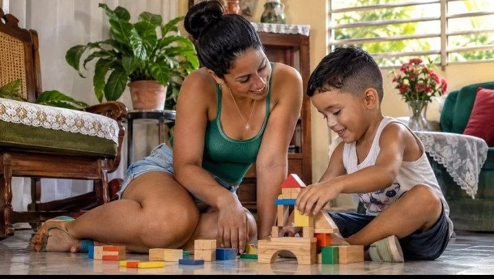
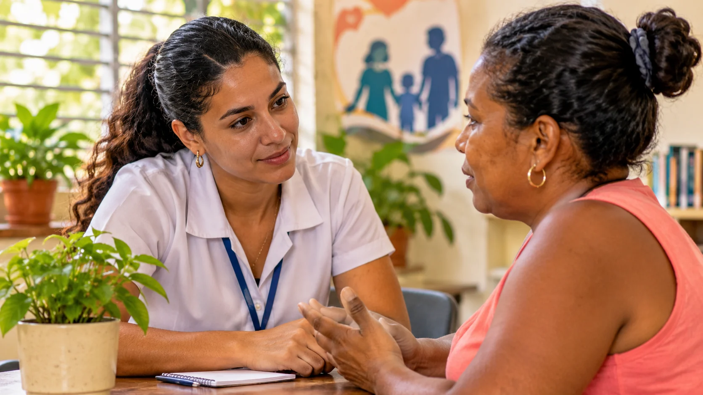

Fonoteca y podcast
Ideas y orientaciones para escuchar en casa, en familia o mientras haces tus tareas.
Explorar audios ↗Acompañar la infancia también es aprender. Un espacio cubano para descubrir, cuidar y crecer juntos durante los primeros mil días.
No hace falta tener todas las respuestas. Hace falta encontrar información confiable, apoyo y espacio para aprender.
CIBA reúne educación parental, contenidos de salud explicados con claridad y herramientas para las familias cubanas. Sin juicios. Sin fórmulas mágicas. Con ciencia, respeto y humanidad.
Explora cada espacio de CIBA y encuentra contenidos organizados para acompañar la vida familiar.

CComprender la infancia, educar con afecto y acompañar cada etapa del desarrollo.
Entrar en Crianza ↗Habitar el mundo digital con seguridad, pensamiento crítico y responsabilidad.
Entrar en Informática ↗Cuidar la salud física y emocional, los vínculos y la vida cotidiana.
Entrar en Bienestar ↗
AEncontrar orientación, herramientas y apoyo para los desafíos de cada familia.
Entrar en Acompañamiento ↗Diez recursos de CIBA para consultar, escuchar, aprender y proteger.
Consulta alimentos, propiedades, edades de introducción y formas seguras de preparación.
Explorar biblioteca ↗ HERRAMIENTA · ALIMENTACIÓNUna ayuda práctica para explorar preparaciones a partir de los alimentos disponibles en casa.
Abrir herramienta ↗ AUDIO · CULTURA INFANTILCanciones, nanas, rondas y juegos cantados para compartir la música en familia.
Entrar a la fonoteca ↗ PLATAFORMA · MATERIALESGuías y materiales útiles para consultar, guardar o imprimir cuando los necesites.
Ver materiales ↗ PLATAFORMA · PARTICIPACIÓNUn espacio para participar, compartir propuestas y contribuir a mejorar la plataforma.
Conocer la comunidad ↗ AUDIO · PRODUCCIÓN CIBAEscucha los episodios de CIBA: conversaciones sobre crianza, desarrollo y vida familiar.
Escuchar podcasts ↗ CRIANZA · PREVENCIÓNDiez temas esenciales para reconocer riesgos, prevenir accidentes y saber cómo actuar durante los primeros dos años.
Explorar la sección ↗ BIENESTAR · RECURSO INTERACTIVORegistra peso, longitud y perímetro cefálico; acompaña el crecimiento y los pequeños logros de tu bebé desde el nacimiento hasta los 24 meses.
Abrir Mi bebé crece ↗ BIENESTAR · SEGUIMIENTO INFANTILRegistra peso, longitud y perímetro cefálico; observa la trayectoria de crecimiento de tu bebé durante los primeros dos años.
Abrir herramienta ↗INFORMÁTICA · HERRAMIENTAS FAMILIARESAplicaciones seleccionadas para el cuidado, el crecimiento, el aprendizaje, los primeros auxilios y la seguridad digital.
Ver selección de apps ↗BIENESTAR · VACUNACIÓN INFANTILMaterial familiar de dos páginas para acompañar la vacunación infantil y conservar información práctica junto al carné oficial.
Descargar tríptico PDF ↗Los recursos avanzan lentamente. Desliza con el dedo o arrastra con el ratón para recorrerlos en cualquier dirección.
Cinco artículos recientes para seguir aprendiendo y acompañando cada etapa.
Cargando las últimas publicaciones…
Las novedades se actualizan automáticamente. Desliza o arrastra para recorrerlas.
Queremos que cada familia encuentre respuestas comprensibles, prácticas y respetuosas. La información de CIBA es educativa y no sustituye la valoración de los profesionales de salud.
Conoce el proyecto ↗Ideas y orientaciones para escuchar en casa, en familia o mientras haces tus tareas.
Explorar audios ↗Recursos educativos para guardar, consultar y compartir con quienes cuidan.
Ver materiales ↗Un espacio para acercarte al proyecto y participar de esta construcción colectiva.
Acercarme ↗